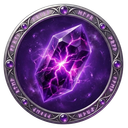

Your wallpaper
Pick a bundled scene or upload your own photo or video. A live wallpaper pauses itself when the tab is in the background, so nothing keeps decoding behind a window you cannot see.

Crystal Wall DownloadVersion 1.3.0 · Chrome & Edge · Manifest V3
Your own wallpaper, a big clock, search that suggests as you type, the sites you actually open, a focus timer and weather — on frosted glass that stays out of the way.
Features
Every card below is optional: turn it off, drag it somewhere else, fade it, or leave it behind in Zen view.
Pick a bundled scene or upload your own photo or video. A live wallpaper pauses itself when the tab is in the background, so nothing keeps decoding behind a window you cannot see.
Google suggestions as you type, DuckDuckGo when Google is unreachable, plus your own recent queries shown instantly — and the suggestion list always floats above the tiles.
Your sites as tiles with their real favicons. Add, rename, reorder and recolour them, choose how many show, and drag the tile size anywhere from 72 to 160 pixels.
25, 45 or 60 minute sessions with a ring that fills as the time passes. Work and break alternate, and the widget tells you when a session ends instead of ending in silence.
Current conditions and a two-day forecast from Open-Meteo, with no key and no account. Use your browser's location once, or type a town by hand — and switch °C/°F whenever.
From glass to Dracula, Nord, Gruvbox, Tokyo Night and iOS. Tune font colour, glass tint, transparency, blur, outline and halo per theme, import your own, and the settings panel follows along.
One press fades the page down to the clock, the wallpaper and whatever you chose to keep. Every widget gets its own row in Settings → Zen view, so nothing disappears that you wanted.
Ctrl+K opens the command palette, / jumps to search, Alt+Z toggles Zen. Record your own combination for twenty actions, and edit any saved one in place.
Export every setting, theme, wallpaper and track to one readable file, or point two profiles at a folder and let them merge. A wrong import is one Undo last change away.
Install
Crystal Wall is loaded unpacked — the same three clicks in every Chromium browser. Pick yours and the exact steps, with the right settings address, open below.
Chrome 137+ no longer accepts command-line installs, so the four clicks are the install. Unzip first — the folder you point at must contain manifest.json.
Update
Grab the current folder again and replace the old one, keeping the same path.
chrome://extensions or edge://extensions, with Developer mode still on.
On the Crystal Wall card. Your settings, shortcuts, wallpapers, notes and music stay exactly where they were.
Privacy
Settings, wallpapers, themes and notes live in your browser's own storage. There is no account, no server of ours and no analytics. The only requests are the ones a feature needs: Google's suggestion endpoint, Open-Meteo for weather, and whatever address serves a wallpaper you chose.